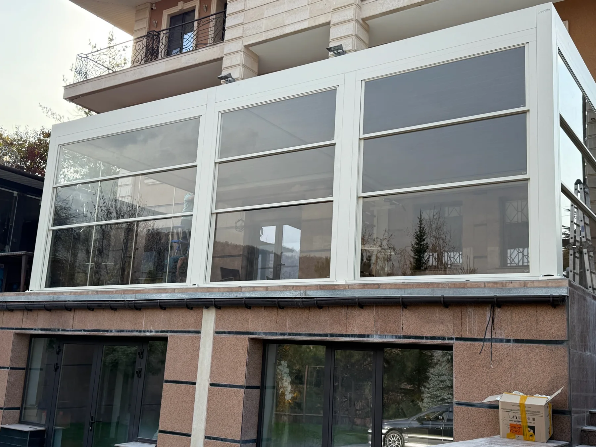
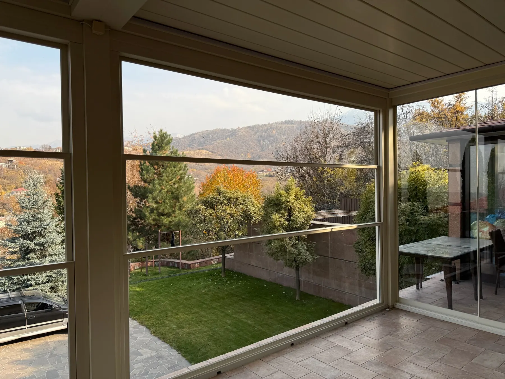
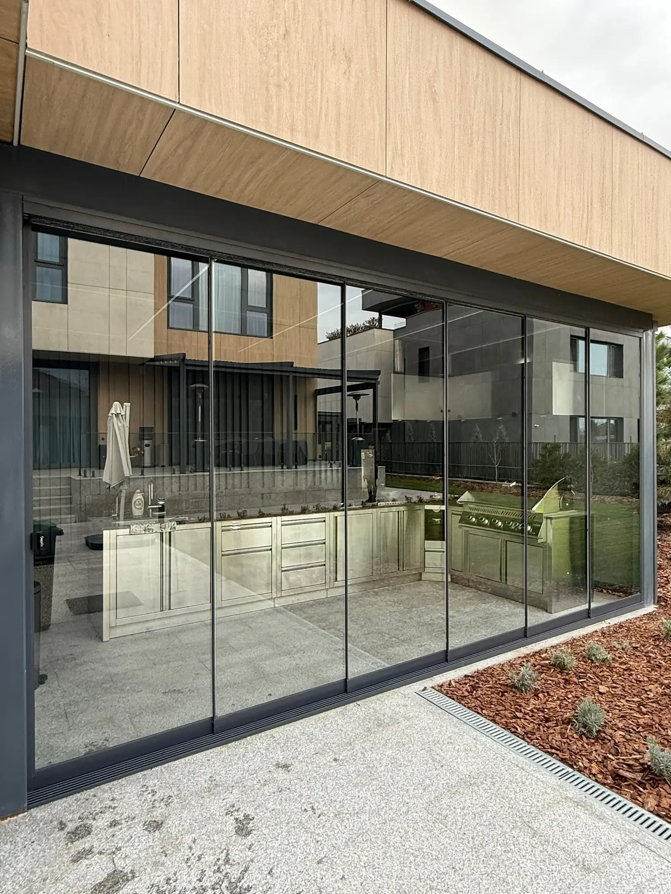

Главное различие — как движутся стеклянные панели. В раздвижной системе они уходят в сторону, в гильотинной — перемещаются вертикально. Выбор начинается с назначения террасы и привычного сценария её использования.
В сторону или по вертикали
Раздвижное остекление
Створки сдвигаются в сторону и не занимают пространство внутри помещения при открывании. В зависимости от конструкции можно открыть часть или почти всю площадь проёма.
Гильотинное остекление
Панели поднимаются и опускаются вертикально. По информации владельца IGS Outdoor, предлагаемые системы используют электропривод и дистанционное управление.


Сравнивайте не только внешний вид
Как часто вы открываете террасу? Какую часть проёма хотите освобождать? Кто будет пользоваться системой дома или в заведении?
Для раздвижной системы обсудите боковое перемещение створок, для гильотинной — вертикальное положение панелей. Так выбор будет связан с использованием террасы, а не только с фотографией фасада.
«Раздвижное» — ещё не значит «тёплое»
По информации владельца IGS Outdoor, раздвижное остекление может быть холодным или тёплым в зависимости от профиля и стеклопакета. Поэтому сезон использования нужно обсуждать вместе с конкретным исполнением.
Расскажите специалисту, как планируете пользоваться террасой. Характеристики выбранной системы уточняют при подборе для вашего объекта.

Что сообщить специалисту
- Тип объекта: дом, кафе, ресторан или другое пространство.
- Предполагаемые размеры и фотографии места установки.
- Какую часть проёма хотите открывать и как часто.
- Желаемый способ управления.
- Планы использования террасы в разные сезоны.
Раздвижное остекление описано владельцем как простое и понятное в эксплуатации. Для гильотинного варианта предусмотрено дистанционное управление, а окончательные размеры и исполнение подбирают для конкретного объекта.
Посмотреть остекление террасЧастые вопросы
В чём главное отличие двух систем?
У раздвижной системы створки перемещаются в сторону, у гильотинной панели движутся вертикально. Выбор связывают с назначением террасы и желаемым способом открывания.
Любое раздвижное остекление тёплое?
Нет, по информации IGS Outdoor исполнение зависит от профиля и стеклопакета. Уточняйте характеристики выбранного варианта при подборе.
Можно ли заранее сравнить системы для своего объекта?
Начните с предполагаемых размеров и фотографий места установки. Расскажите специалисту, как хотите пользоваться террасой, чтобы обсудить подходящее исполнение.